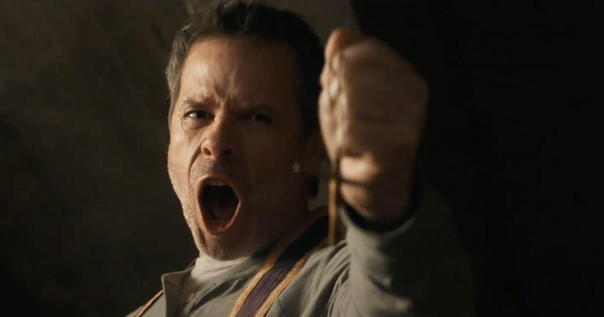
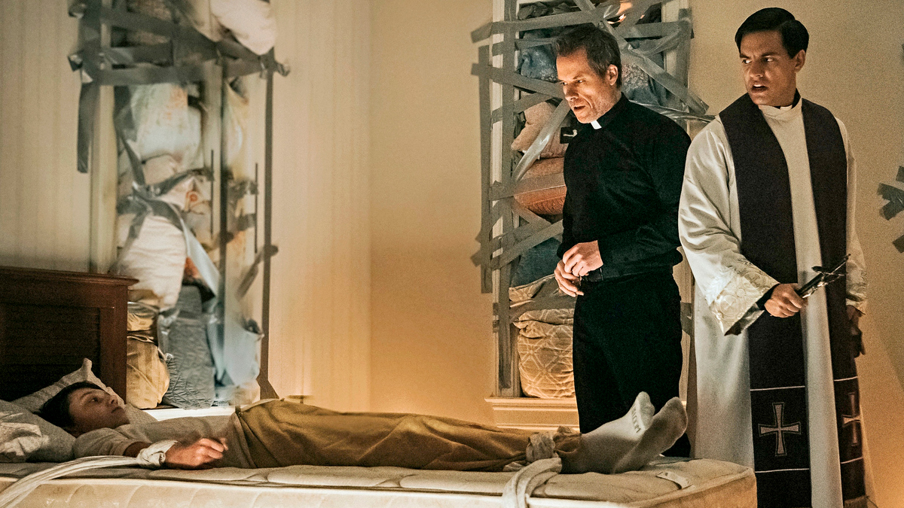
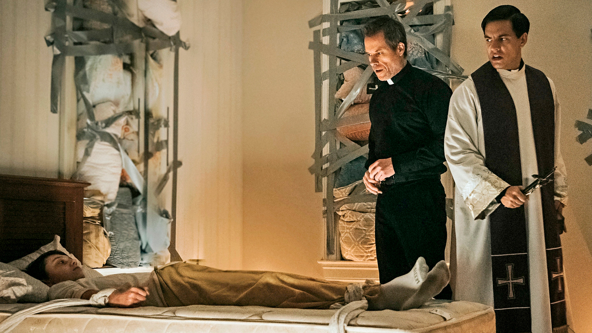
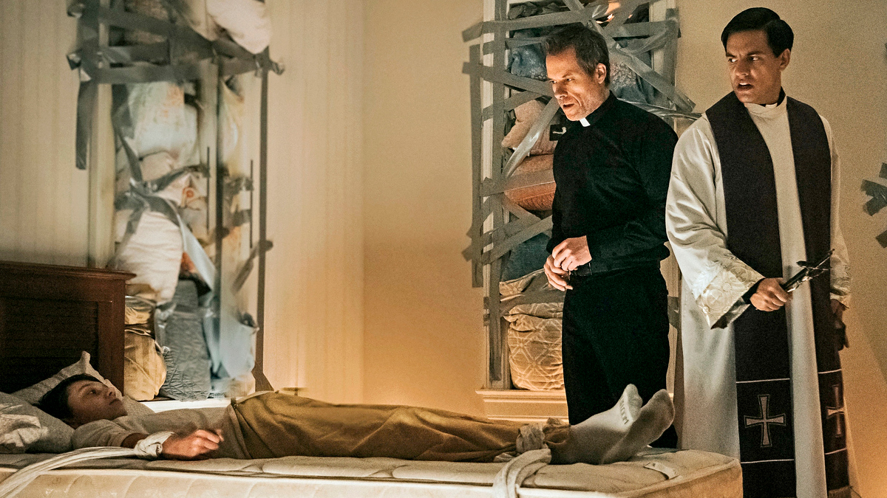
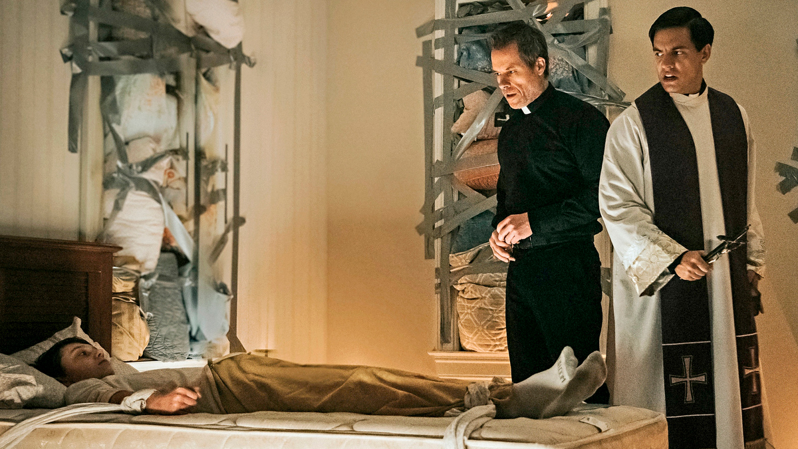

ALGUNAS IMAGENES..

 


El referente más cercano y famoso por excelencia sobre una cinta de exorcismos es la obra maestra de William Friedkin, El Exorcista (87%). En 1973, se realizó esta adaptación de la novela de William Peter Blatty Blatty que a su vez se basó en un exorcismo real. Existe un antes y un después en el cine de terror gracias a esta cinta, pues se le considera como una de las más aterradoras y populares de todos los tiempos, sino es que la mayor.

La historia gira en torno a un exorcista de renombre que se une a un sacerdote novato para su primer día de entrenamiento. A medida que se sumergen más profundamente en el infierno en la tierra, las líneas entre el bien y el mal se desdibujan y sus propios demonios emergen. A primera vista, la sinopsis insinúa que se trata de una historia bastante interesante sobre los exorcismos, un padre que está aprendiendo este arduo camino sobre un conflicto profundo; pero cuando vemos la película, el guión apenas desarrolla los puntos que el resumen expone.
Si bien, el punto más alto e interesante que tiene la cinta dirigida por Justin P. Lange es su introducción, pues se muestra un hecho del pasado que terminó por marcar al joven padre Peter, donde es la única ocasión que se siente un peligro real y constante tensión por parte de los actores al presenciar un exorcismo. Desgraciadamente, una vez que termina esta secuencia, todo va en picada. Si bien el arquetipo del "héroe roto" que interpreta Guy Pearce es interesante, sólo sirve de excusa para tenerlo inmóvil en toda la historia, no hay un desarrollo mínimo en su personaje o diálogos intensos que lo hagan ver como un mentor que trata de aniquilar a las posesiones que están sucediendo en el país.